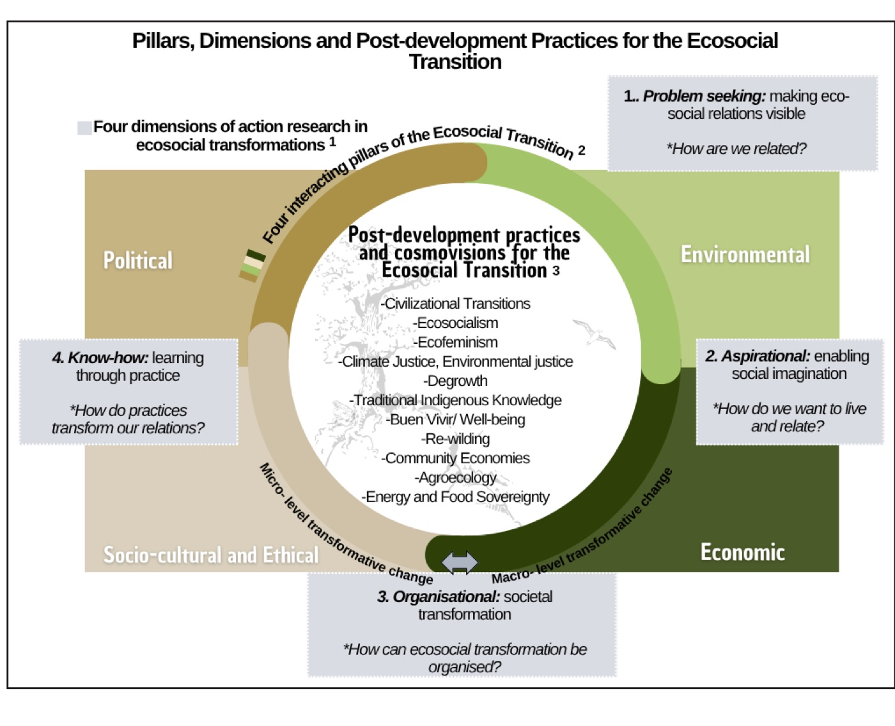

La comunicación ambiental se ha expandido considerablemente en las últimas décadas, pero las revisiones sistemáticas revelan de forma constante limitaciones estructurales: un sesgo occidental y mediocéntrico, la fragmentación disciplinar y la marginación de las epistemologías latinoamericanas y del Sur global. Este estudio propone un marco teórico e interpretativo para repensar el campo desde una mirada ecosocial, desarrollando el concepto de comunicación para la transición ecosocial como un enfoque holístico, decolonial y transformador. Con un diseño cualitativo, teórico-interpretativo, basado en una revisión crítica de la literatura que pone en diálogo la producción iberoamericana y del Sur global con los marcos anglófonos dominantes, aborda tres preguntas: qué es la transición ecosocial y de qué epistemologías se nutre; qué papeles puede desempeñar la comunicación para impulsarla; y qué aportaciones y desafíos plantea esta perspectiva al campo. Cuatro casos ilustrativos, seleccionados mediante muestreo intencional por criterios, ejemplifican prácticas comunicativas ecosociales en el ecosistema mediático actual. El análisis muestra que la comunicación ecosocial opera como una práctica relacional, participativa y transformadora que co-construye ontologías alternativas de la relación naturaleza-sociedad, devuelve autoridad epistémica a saberes históricamente inferiorizados y reivindica la agencia comunicativa de entidades no humanas como condición de la lucha política. El estudio identifica también desafíos estructurales derivados de la plataformización, el extractivismo de datos y las lógicas de la economía de la atención. Concluye que el enfoque ecosocial resitúa la comunicación ambiental como una praxis viva orientada a la imaginación colectiva, el cuidado y la co-creación de futuros justos y sostenibles.
Artículos en revistas · 2026
Rethinking Environmental Communication: A Holistic Approach for Ecosocial Transition
Westminster Papers in Communication and Culture, 17(1), 1–17
